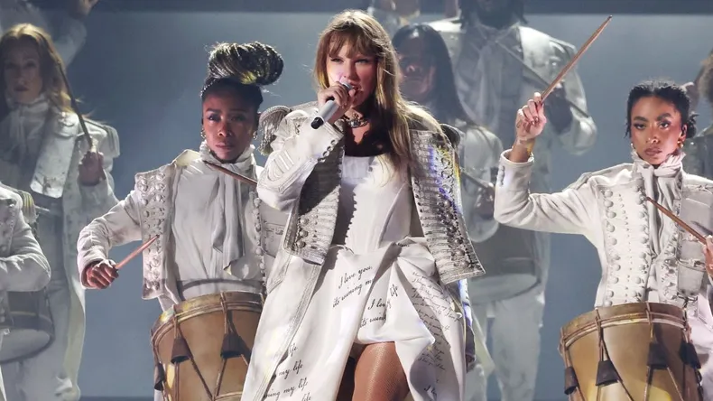
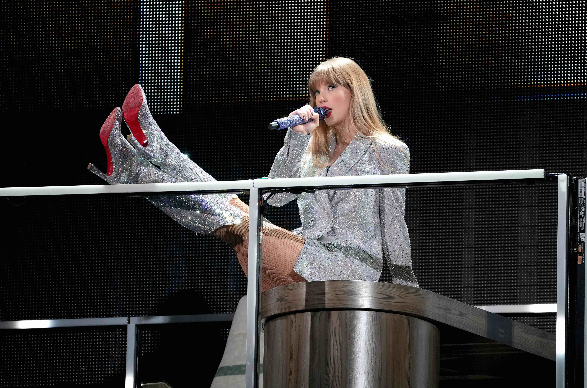
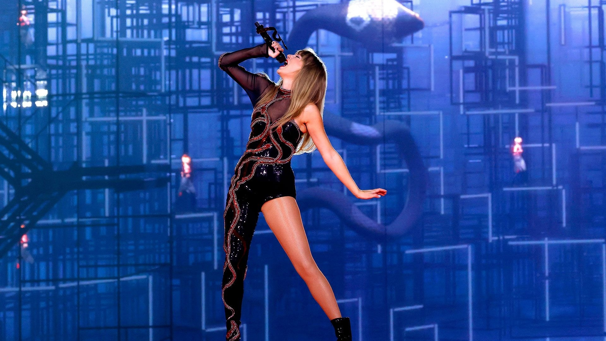
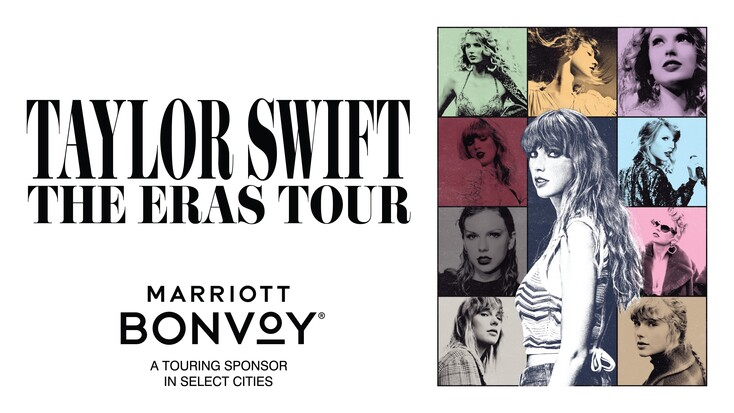
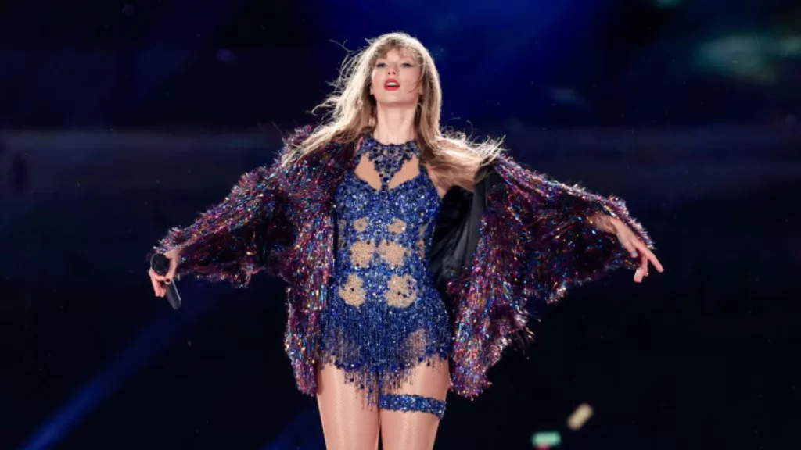

¿Quien es Taylor Swift?
Taylor Swift es una de las cantautoras mas exitosas de la historia, nacio el 13 de diciembre de 1989, actualmente tiene 34 años y comenzo su carrera musical en el 2006 donde lanzo su primer album oficial con tan solo 16 años. Durante su carrera lanzo un total de 10 albumes y 4 de las 6 regrabaciones de sus primeros albumes esto debido a que en 2018 no renovo el contrato con su discografica de ese momento que producia su musica, entonces el dueño de la discografica le saco los derechos de sus primeros 6 albumes y para poder recuperarlos los esta volviendo a relanzar uno por uno, agregandoles al nombre original de cada uno el Taylor's Version. Taylor Swift desde que esta en el mundo de la musica se ha direccionado hacia diferentes generos de musica como el country, el pop, indie folk, rock alternativo entre otros.
Taylor en el Eras Tour, en la era RED.

Taylor durante su perfomance de la cancion All Too Well, la cual toca con su guitarra.
Taylor en la era de The Tortured Poets Departament
Taylor cantando por primera vez una cancion de su nuevo album titulada The smallest man who ever lived.
Taylor en la era Lover
Taylor durante la performance de la cancion titulada The Man.
Taylor durante la era de Reputacion
Taylor cantando la nota alta de su canción Dont Blame Me..
Premios
Taylor ha sido ganadora de mas de 330 premios que incluyen 14 Grammys(en los cuales gano 4 veces al mejor album del año batiendo un record nombrandose asi a ser la primer prersona con 4 premios Grammy al album del año), un emmy, 25 Billboard Music Awards, 40 American Music Award, entre muchos otros.
Records mas importantes que rompio Taylor Swift
- Primera persona en tener 4 Grammys al album del año.
- La gira mundial mas exitosa de la historia (The Eras Tour).
- La primer persona en convertirse mulmillonaria unicamente con ingresos de la musica.
- La primer cantante en ser elegida como persona del año por la revista times.


